Working with Spatial Point Data
![logo]()
In this section, we will learn how to integrated a different types of spatial data and create a data frame for spatial interpolation. This excessive consists of six major steps:
Load R-packages
library(RColorBrewer) # Create couston color plate
library(classInt) # create class interval of data
library(raster) # spatial data
library(latticeExtra) # advance ploting function
library(Hmisc) # for correlation matrix
library(corrplot) # create nice looking orrelation matrix plot
library(ggplot2) # create box-jitter plot
library(plyr) # data manupulation
library(corrplot) # Plot correlation matix
library(dplyr) # data manipulation
library(ggmap) # advance mapping
library(plotGoogleMaps) # plot data on Google MapLoad Data
We will use following spatial data to create the data frame. The data can be download from here.
Soil sampling locations (GP_GPS.CSV): This file contains coordinates of 473 soil sampling sites in Colorado, Kansas, New Mexico, and Wyoming. The soil samples were collected by United States Geological Survey (USGS) throughout the A horizon with sampling densities of 1 sample per ~1600 km2 [Smith et al., 2011].
Soil organic carbon (SOC) (GP_SOC_data.csv): SOC concentration of these 473 sites. The concentration of SOC was predicted by means of mid-infrared (MIR) spectroscopy and partial least squares regression (PLSR) analysis described previously [Janik et al., 2007; Ahmed et al., 2017].
Raster data: DEM (ELEV), slope, aspect, topographic position index (TPI), mean annual air temperature (MAT), mean annual precipitation (MAP), soil texture (Silt+Clay), Fire Regime Groups(FRG), Normalized Difference Vegetation Index (NDVI), and land cover (NLCD) and soil erodibility factor (K_factor). This data has downloaded from here and detail description of the data can be found in Assessing soil carbon vulnerability in the Western USA by geospatial modeling of pyrogenic and particulate carbon stocks. For training purpose, all raster was re-sampled to 10 km x 10 km grid size.
# Define data folder
dataFolder<-"F://Spatial_Data_Processing_and_Analysis_R//Data//DATA_05//"ID<-read.csv(paste0(dataFolder,"GP_ID.csv"), header= TRUE) # id file
gps<-read.csv(paste0(dataFolder, "GP_GPS.csv"), header= TRUE) # data file
data<-read.csv(paste0(dataFolder,"GP_SOC_data.csv"), header= TRUE) # GPS coordinatesCreate a Spatial Point Data Frame
Data contains three attributes: ID, longitude and latitude in decimal degree (DD) format of soil sampling location. If you have GPS coordinates as degrees (d), minutes (m), and seconds (s) format,you need to convert to DD using below formula:
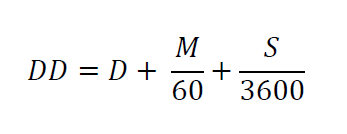
Merge Data
We will merge ID, GPS and data objects using merge() function by a common ID
# merge two data.frames
df_01 <- merge(ID,gps, by="ID") # join GPS coordinates with state and county ID
df <- merge(df_01,data,by="ID") # join data
head(df)## ID STATE_ID STATE FIPS COUNTY Longitude Latitude SOC
## 1 1 56 Wyoming 56041 Uinta County -111.0119 41.05630 15.763
## 2 2 56 Wyoming 56023 Lincoln County -110.9830 42.88350 15.883
## 3 3 56 Wyoming 56039 Teton County -110.8065 44.53497 18.142
## 4 4 56 Wyoming 56039 Teton County -110.7344 44.43289 10.745
## 5 5 56 Wyoming 56029 Park County -110.7308 44.80635 10.479
## 6 6 56 Wyoming 56039 Teton County -110.6619 44.09124 16.987Create a Spatial point dataframe (SPDF)
Now we will create a Spatial Point data frame using SpatialPointsDataFrame() function of sp package, First you have to define xy-coordinates of the data frame
## define coordinates
xy <- df[,c(6,7)]
# Convert to spatial point
SPDF <- SpatialPointsDataFrame(coords = xy, data=df)
str(SPDF)## Formal class 'SpatialPointsDataFrame' [package "sp"] with 5 slots
## ..@ data :'data.frame': 473 obs. of 8 variables:
## .. ..$ ID : int [1:473] 1 2 3 4 5 6 7 8 9 10 ...
## .. ..$ STATE_ID : int [1:473] 56 56 56 56 56 56 56 56 56 56 ...
## .. ..$ STATE : Factor w/ 4 levels "Colorado","Kansas",..: 4 4 4 4 4 4 4 4 4 4 ...
## .. ..$ FIPS : int [1:473] 56041 56023 56039 56039 56029 56039 56039 56039 56039 56035 ...
## .. ..$ COUNTY : Factor w/ 161 levels "Adams County",..: 152 84 148 148 111 148 148 148 148 143 ...
## .. ..$ Longitude: num [1:473] -111 -111 -111 -111 -111 ...
## .. ..$ Latitude : num [1:473] 41.1 42.9 44.5 44.4 44.8 ...
## .. ..$ SOC : num [1:473] 15.8 15.9 18.1 10.7 10.5 ...
## ..@ coords.nrs : num(0)
## ..@ coords : num [1:473, 1:2] -111 -111 -111 -111 -111 ...
## .. ..- attr(*, "dimnames")=List of 2
## .. .. ..$ : NULL
## .. .. ..$ : chr [1:2] "Longitude" "Latitude"
## ..@ bbox : num [1:2, 1:2] -111 31.5 -94.9 45
## .. ..- attr(*, "dimnames")=List of 2
## .. .. ..$ : chr [1:2] "Longitude" "Latitude"
## .. .. ..$ : chr [1:2] "min" "max"
## ..@ proj4string:Formal class 'CRS' [package "sp"] with 1 slot
## .. .. ..@ projargs: chr NADefine projection
We will define current CRS (WGS 84) before re-project it to **Albers Equal Area Conic NAD1983"
proj4string(SPDF) = CRS("+proj=longlat +ellps=WGS84") # WGS 84
proj4string(SPDF)
## [1] "+proj=longlat +ellps=WGS84"We will copy projection parameters (Albers Equal Area Conic NAD1983) from state boundary file and use it to re-project the SPDF file
state<-shapefile(paste0(dataFolder, "GP_STATE.shp"))
albers<-proj4string(state)
albers
## [1] "+proj=aea +lat_1=29.5 +lat_2=45.5 +lat_0=23 +lon_0=-96 +x_0=0 +y_0=0 +datum=NAD83 +units=m +no_defs +ellps=GRS80 +towgs84=0,0,0"# Reprojection
SPDF.PROJ<- spTransform(SPDF, # Input SPDF
albers) # new projection
# Check project
proj4string(SPDF.PROJ)
## [1] "+proj=aea +lat_1=29.5 +lat_2=45.5 +lat_0=23 +lon_0=-96 +x_0=0 +y_0=0 +datum=NAD83 +units=m +no_defs +ellps=GRS80 +towgs84=0,0,0"
# Write as a ESRI shape file
shapefile(SPDF.PROJ, paste0(dataFolder, "GP_Data_PROJ.shp"),overwrite=TRUE)Plot the data
par(mfrow=c(1,2))
plot(SPDF, main="WGS 1984", pch=20, cex =0.2)
plot(state, add=T)
plot(SPDF.PROJ, main="Albers Equal Area Conic", pch=20, cex=0.2)
plot(state, add=T)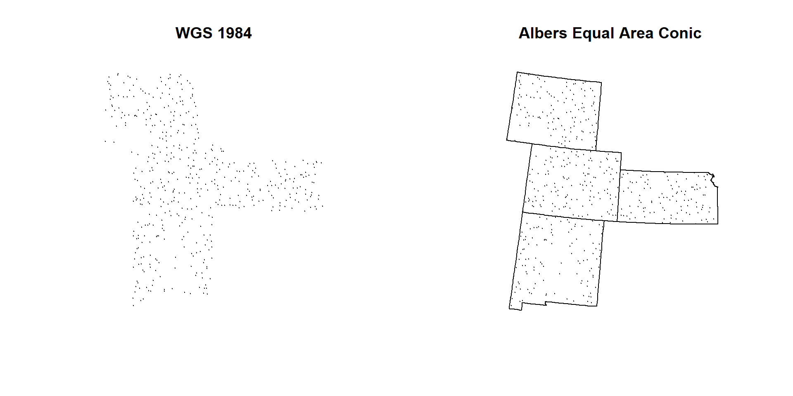
par(mfrow=c(1,1))Convert SPDF to a dataframe
Now we will create a new CSV files with data and projected-coordinates (meter)
# convert to a data-frame
point.df<-as.data.frame(SPDF.PROJ)
# Rename
colnames(point.df)[9] <- "x"
colnames(point.df)[10] <- "y"Extract Environmental Covariates to SPDF
Now, we will extract raster values to SPDF data frame the Characterize the sampling locations with a comprehensive set of environmental data. First, you have to create a list of raster and then stack them with stack() function.
Create a raster list
glist <- list.files(path=paste0(dataFolder, ".//RASTER"),pattern='.tif$',full.names=T)
s<- stack(glist)
plot(s)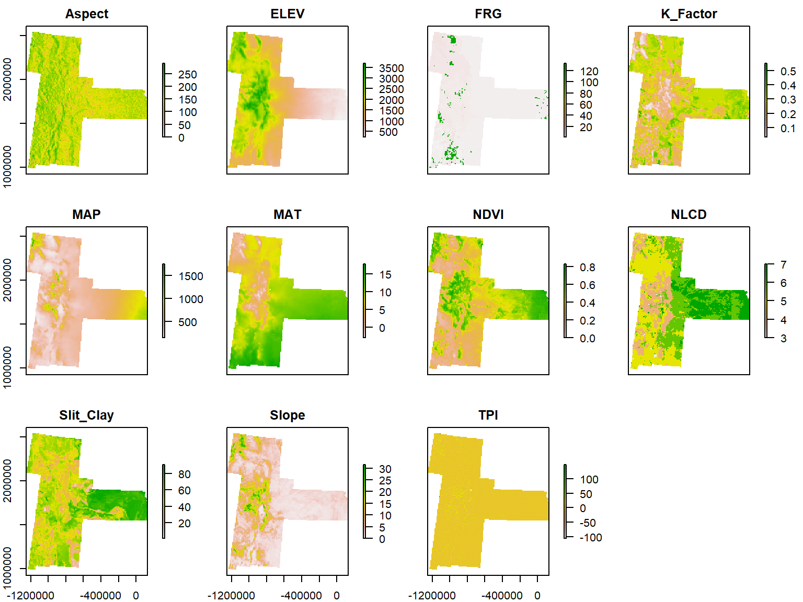
Extract raster values to SPDF
We will use extract() function from raster package, but extract() will be show some error since it is conflicting with another package, so we use raster::extract function.
vals<-raster::extract(s,
SPDF.PROJ,
df=TRUE,
method="simple")
point.vals<-cbind(point.df,vals)Since, NLCD and FRG are categorical class raster, you need to add their class description into data frame.
# Load ID files
NLCD.ID<-read.csv(paste0(dataFolder,"NLCD_ID.csv"), header= TRUE)
FRG.ID<-read.csv(paste0(dataFolder,"FRG_ID.csv"), header= TRUE)
# Join ID
mf.01 <- merge(point.vals,NLCD.ID, by="NLCD", type="inner") ## Warning in merge.data.frame(point.vals, NLCD.ID, by = "NLCD", type =
## "inner"): column name 'ID' is duplicated in the resultmf.02 <- merge(mf.01,FRG.ID, by="FRG",type="inner") ## Warning in merge.data.frame(mf.01, FRG.ID, by = "FRG", type = "inner"):
## column name 'ID' is duplicated in the result# Delete column 3 (extra ID)
mf.02<- mf.02[, -3]
# re-arrange the data-frame (use dplyr::select)
mf<-mf.02 %>%
dplyr::select(ID,STATE_ID,STATE,FIPS,COUNTY,Longitude,Latitude,x,y,SOC,
ELEV,Aspect,Slope,TPI,K_Factor,MAP,MAT,NDVI,Slit_Clay,NLCD,FRG,NLCD_DES,FRG_DES)
head(mf)## ID STATE_ID STATE FIPS COUNTY Longitude Latitude
## 1 466 20 Kansas 20099 Labette County -95.47712 37.26198
## 2 55 35 New Mexico 35031 McKinley County -108.66695 35.39574
## 3 51 8 Colorado 8033 Dolores County -108.72642 37.82026
## 4 67 35 New Mexico 35003 Catron County -108.51250 33.92054
## 5 449 20 Kansas 20019 Chautauqua County -96.22429 37.01526
## 6 86 35 New Mexico 35003 Catron County -108.14311 34.33232
## x y SOC ELEV Aspect Slope TPI
## 1 45935.33 1580239 7.256 272.6797 185.0404 1.429968 1.0744587
## 2 -1137299.01 1446994 4.594 2261.7820 222.3785 4.874323 -1.4409482
## 3 -1106344.79 1716869 5.995 2404.1121 183.5729 6.680480 7.7656183
## 4 -1145173.13 1281595 11.220 2281.4246 173.1285 7.745950 -3.2823703
## 5 -19769.53 1552489 5.388 277.6634 168.1043 2.923675 -0.4226714
## 6 -1105687.48 1322861 1.619 2317.4907 193.8056 2.635038 -1.4339905
## K_Factor MAP MAT NDVI Slit_Clay NLCD FRG
## 1 0.3255294 1099.3408 13.748117 0.6943141 77.16470 7 1
## 2 0.2486000 410.5008 8.162200 0.3705533 40.66200 4 1
## 3 0.0590000 568.7746 6.890750 0.6434158 53.73600 4 1
## 4 0.2847475 391.4978 8.533788 0.3530265 46.83738 4 1
## 5 0.3750685 1013.7034 14.152466 0.7292835 62.83973 6 1
## 6 0.2491000 368.2008 8.189600 0.2837936 38.42100 5 1
## NLCD_DES FRG_DES
## 1 Planted/Cultivated Fire Regime Group I
## 2 Forest Fire Regime Group I
## 3 Forest Fire Regime Group I
## 4 Forest Fire Regime Group I
## 5 Herbaceous Fire Regime Group I
## 6 Shrubland Fire Regime Group I# Write as CSV file
write.csv(mf, paste0(dataFolder,"GP_all_data.csv"), row.names=F)Create a Prediction Grid
# First, we will create an empty point data frame, will ELEV raster
DEM<-raster(paste0(dataFolder, ".//RASTER//ELEV.tif"))
grid.point <- data.frame(rasterToPoints(DEM))
# Remove DEM column, just keep x & y
grid.point$ELEV<-NULL
# define co-ordinates and projection
coordinates(grid.point) <- ~x + y
projection(grid.point) <- albers
# Extract values to grid.point
df.grid<- raster::extract(s, grid.point, df=TRUE, method='simple')
grid<-cbind(as.data.frame(grid.point),df.grid)
grid.na<-na.omit(grid)
write.csv(grid.na, paste0(dataFolder, "GP_prediction_grid_data.csv"), row.names=F)
head(grid)## x y ID Aspect ELEV FRG K_Factor MAP MAT
## 1 -1185285 2533795 1 258.8979 2314.257 5 0.2000000 990.0264 2.1927779
## 2 -1175285 2533795 2 217.6896 2482.817 5 0.2000000 1091.2081 1.4273914
## 3 -1165285 2533795 3 158.6678 2693.917 5 0.1525316 1066.5002 0.2056963
## 4 -1155285 2533795 4 153.8563 2214.005 4 0.2000000 552.9740 2.3689830
## 5 -1145285 2533795 5 161.8305 1963.815 4 0.2000000 451.2378 2.9840243
## 6 -1135285 2533795 6 177.0413 1944.041 4 0.2116667 377.9390 3.5895834
## NDVI NLCD Slit_Clay Slope TPI
## 1 0.6329939 5 66.13333 9.425282 1.095321
## 2 0.5944687 5 65.15000 10.748769 -2.123787
## 3 0.5404650 4 56.78228 15.659680 6.394828
## 4 0.5916601 5 69.42712 14.727632 -10.212730
## 5 0.5918845 5 42.17317 9.150772 -4.167515
## 6 0.5902479 5 47.91250 14.050600 -13.620614Exploratory data analysis
In statistics, exploratory data analysis (EDA) is an approach to analyzing data sets to summarize their main characteristics, often with visual methods. A statistical model can be used or not, but primarily EDA is for seeing what the data can tell us beyond the formal modeling or hypothesis testing task. Exploratory data analysis was promoted by John Tukey to encourage statisticians to explore the data, and possibly formulate hypotheses that could lead to new data collection and experiments. EDA is different from initial data analysis (IDA), which focuses more narrowly on checking assumptions required for model fitting and hypothesis testing, and handling missing values and making transformations of variables as needed. EDA encompasses IDA (Source: Wikipedia )
Summary statistics
summary(mf$SOC)## Min. 1st Qu. Median Mean 3rd Qu. Max.
## 0.001 2.751 4.931 6.298 8.637 30.473Quantile
quantile(mf$SOC)## 0% 25% 50% 75% 100%
## 0.001 2.751 4.931 8.637 30.473Histogram with base R function
hist(mf$SOC,
main="Histogram of Soil OC",
xlab= "Soil OC (mg C/g)")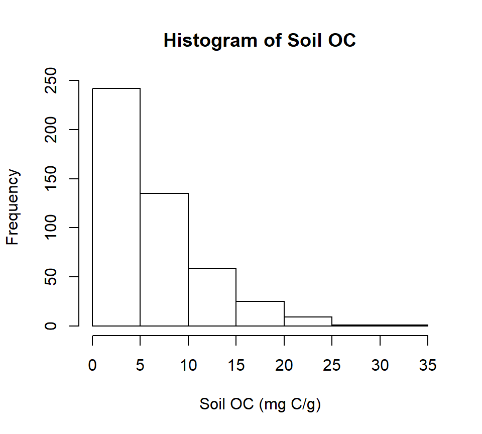
You can save this figure as a high resolution tif file in your working directory
windows(width=5, height=4.5)
tiff( file="FIGURE_01_HISTOGRAM_SOC.tif",
width=5, height=4.5,units = "in", pointsize = 12, res=300,
restoreConsole = TRUE,compression = "lzw")
hist(mf$SOC,
main= "Histogram of Soil OC",
xlab= "Soil OC (mg C/g)")
dev.off()Quantile-Quantile (QQ) plot
qqnorm(mf$SOC, pch = 1,main= "") # produces a normal QQ plot of the variable
qqline(mf$SOC, col = "steelblue", lwd = 2) # adds a reference line
Correlation SOC with environmental data
First you have to create a data.frame with SOC and continuous environmental data. Then, we will use rcorr() function of Hmisc package. The output of this function will produce following: ** r : the correlation matrix ** n : the matrix of the number of observations used in analyzing each pair of variables ** P : the p-values corresponding to the significance levels of correlations.
# Create a data frame with SOC and continous environmental data
df.cor <- mf[, c(10:19)]
# head(df.cor)
head(df.cor)## SOC ELEV Aspect Slope TPI K_Factor MAP
## 1 7.256 272.6797 185.0404 1.429968 1.0744587 0.3255294 1099.3408
## 2 4.594 2261.7820 222.3785 4.874323 -1.4409482 0.2486000 410.5008
## 3 5.995 2404.1121 183.5729 6.680480 7.7656183 0.0590000 568.7746
## 4 11.220 2281.4246 173.1285 7.745950 -3.2823703 0.2847475 391.4978
## 5 5.388 277.6634 168.1043 2.923675 -0.4226714 0.3750685 1013.7034
## 6 1.619 2317.4907 193.8056 2.635038 -1.4339905 0.2491000 368.2008
## MAT NDVI Slit_Clay
## 1 13.748117 0.6943141 77.16470
## 2 8.162200 0.3705533 40.66200
## 3 6.890750 0.6434158 53.73600
## 4 8.533788 0.3530265 46.83738
## 5 14.152466 0.7292835 62.83973
## 6 8.189600 0.2837936 38.42100# create a correlation matrix
cor.matrix <- rcorr(as.matrix(df.cor))
cor.matrix## SOC ELEV Aspect Slope TPI K_Factor MAP MAT NDVI
## SOC 1.00 0.17 0.16 0.41 0.04 -0.12 0.50 -0.36 0.59
## ELEV 0.17 1.00 0.22 0.70 0.00 -0.56 -0.31 -0.81 -0.07
## Aspect 0.16 0.22 1.00 0.28 0.01 -0.12 0.13 -0.19 0.10
## Slope 0.41 0.70 0.28 1.00 -0.01 -0.51 0.15 -0.64 0.31
## TPI 0.04 0.00 0.01 -0.01 1.00 -0.03 0.15 0.01 0.08
## K_Factor -0.12 -0.56 -0.12 -0.51 -0.03 1.00 0.10 0.37 -0.07
## MAP 0.50 -0.31 0.13 0.15 0.15 0.10 1.00 0.06 0.81
## MAT -0.36 -0.81 -0.19 -0.64 0.01 0.37 0.06 1.00 -0.21
## NDVI 0.59 -0.07 0.10 0.31 0.08 -0.07 0.81 -0.21 1.00
## Slit_Clay 0.19 -0.50 -0.08 -0.21 -0.02 0.59 0.47 0.29 0.32
## Slit_Clay
## SOC 0.19
## ELEV -0.50
## Aspect -0.08
## Slope -0.21
## TPI -0.02
## K_Factor 0.59
## MAP 0.47
## MAT 0.29
## NDVI 0.32
## Slit_Clay 1.00
##
## n= 471
##
##
## P
## SOC ELEV Aspect Slope TPI K_Factor MAP MAT NDVI
## SOC 0.0003 0.0004 0.0000 0.3385 0.0118 0.0000 0.0000 0.0000
## ELEV 0.0003 0.0000 0.0000 0.9422 0.0000 0.0000 0.0000 0.1445
## Aspect 0.0004 0.0000 0.0000 0.8037 0.0093 0.0034 0.0000 0.0342
## Slope 0.0000 0.0000 0.0000 0.7859 0.0000 0.0014 0.0000 0.0000
## TPI 0.3385 0.9422 0.8037 0.7859 0.4796 0.0013 0.8871 0.1033
## K_Factor 0.0118 0.0000 0.0093 0.0000 0.4796 0.0282 0.0000 0.1092
## MAP 0.0000 0.0000 0.0034 0.0014 0.0013 0.0282 0.1912 0.0000
## MAT 0.0000 0.0000 0.0000 0.0000 0.8871 0.0000 0.1912 0.0000
## NDVI 0.0000 0.1445 0.0342 0.0000 0.1033 0.1092 0.0000 0.0000
## Slit_Clay 0.0000 0.0000 0.0673 0.0000 0.6182 0.0000 0.0000 0.0000 0.0000
## Slit_Clay
## SOC 0.0000
## ELEV 0.0000
## Aspect 0.0673
## Slope 0.0000
## TPI 0.6182
## K_Factor 0.0000
## MAP 0.0000
## MAT 0.0000
## NDVI 0.0000
## Slit_ClayYou can create a graphical display of a correlation matrix using the function corrplot() of corrplot package. The function corrplot() takes the correlation matrix as the first argument. The second argument (type=“upper”) is used to display only the upper triangular of the correlation matrix. The correlation matrix is reordered according to the correlation coefficient using “hclust” method.
# Insignificant correlations are leaved blank
corrplot(cor.matrix$r, type="upper", order="hclust",
main="", cex.lab = 0.5,
p.mat = cor.matrix$P, sig.level = 0.05, insig = "blank")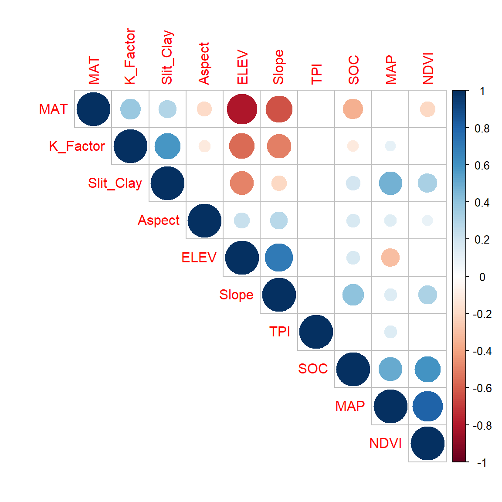
In this plot, correlation coefficients are colored according to the value. Correlation matrix can be also reordered according to the degree of association between variables. Positive correlations are displayed in blue and negative correlations in red color. Color intensity and the size of the circle are proportional to the correlation coefficients. In the right side of the correlogram, the legend color shows the correlation coefficients and the corresponding colors. The correlations with p-value > 0.05 are considered as insignificant. In this case the correlation coefficient values are leaved blank.
Variability of SOC in relation to NLCD landuse (NLCD) and Fire Regime Group (FRG)
Now we explore how SOC values varied with NLCD, TSP and FRG. We will perform following tasks:
- Box-Jitter plot
- Barplot and Summary stat by NLCD, TSP & FRG
Box-Jitter plot
We will ggplot package to create Box-Jitter plots to explore variability of SOC with NLCD, TSP and FRG. First we will created a data.frame with this variables.
df.cat <- mf[, c(10, 22:23)]
head(df.cat)## SOC NLCD_DES FRG_DES
## 1 7.256 Planted/Cultivated Fire Regime Group I
## 2 4.594 Forest Fire Regime Group I
## 3 5.995 Forest Fire Regime Group I
## 4 11.220 Forest Fire Regime Group I
## 5 5.388 Herbaceous Fire Regime Group I
## 6 1.619 Shrubland Fire Regime Group INLCD
rgb.palette <- colorRampPalette(c("red","yellow","green", "blue"),
space = "rgb")
ggplot(df.cat, aes(y=SOC, x=NLCD_DES)) +
geom_point(aes(colour=SOC),size = I(1.7),
position=position_jitter(width=0.05, height=0.05)) +
geom_boxplot(fill=NA, outlier.colour=NA) +
labs(title="")+
theme_bw() +
coord_flip()+
theme(axis.line = element_line(colour = "black"),
# plot.title = element_text(hjust = 0.5),
panel.grid.major = element_blank(),
panel.grid.minor = element_blank(),
panel.background = element_blank(),
axis.text.y=element_text(size=12,vjust = 0.5, hjust=0.5, colour='black'),
axis.text.x = element_text(size=12))+
scale_colour_gradientn(name="SOC (mg C/g)", colours =rgb.palette(10))+
theme(legend.text = element_text(size = 10),legend.title = element_text(size = 12))+
labs(y="SOC", x = "")+
ggtitle("Variability of SOC in relation to NLCD")+
theme(plot.title = element_text(hjust = 0.5))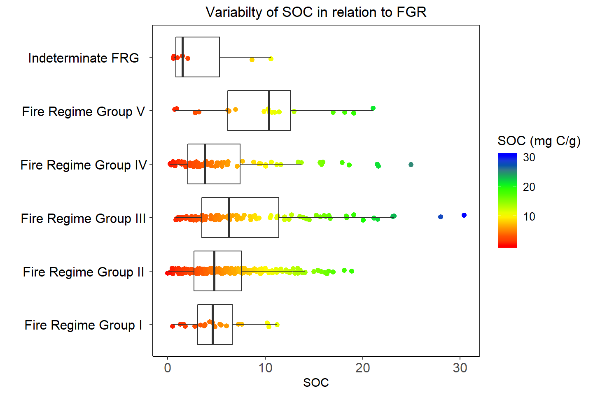
FRG
rgb.palette <- colorRampPalette(c("red","yellow","green", "blue"),
space = "rgb")
ggplot(df.cat, aes(y=SOC, x=FRG_DES)) +
geom_point(aes(colour=SOC),size = I(1.7),
position=position_jitter(width=0.05, height=0.05)) +
geom_boxplot(fill=NA, outlier.colour=NA) +
labs(title="")+
theme_bw() +
coord_flip()+
theme(axis.line = element_line(colour = "black"),
# plot.title = element_text(hjust = 0.5),
panel.grid.major = element_blank(),
panel.grid.minor = element_blank(),
panel.background = element_blank(),
axis.text.y=element_text(size=12,vjust = 0.5, hjust=0.5, colour='black'),
axis.text.x = element_text(size=12))+
scale_colour_gradientn(name="SOC (mg C/g)", colours =rgb.palette(10))+
theme(legend.text = element_text(size = 10),legend.title = element_text(size = 12))+
labs(y="SOC", x = "")+
ggtitle("Variabilty of SOC in relation to FGR")+
theme(plot.title = element_text(hjust = 0.5))Barplot and Summary statistics grouped by NLCD & FRG
Before creating barplots, we are going to calculate summary statistics SOC by NLCD and FRG. We will ddply() function from plyr package. For standard error of mean, we will use following function:
# Standard error
SE <- function(x){
sd(x)/sqrt(length(x))
}# NLCD
NLCD.SOC<-ddply(df.cat,~NLCD_DES, summarise, mean=mean(SOC),median=median(SOC),
sd=sd(SOC), min=min(SOC), max=max(SOC),se=SE(SOC))
# FRG
FRG.SOC<-ddply(df.cat,~FRG_DES, summarise, mean=mean(SOC),median=median(SOC),
sd=sd(SOC), min=min(SOC), max=max(SOC),se=SE(SOC))Barplot - NLCD
ggplot(NLCD.SOC, aes(x=NLCD_DES, y=mean)) +
geom_bar(stat="identity", position=position_dodge(),width=0.5, fill="steelblue") +
geom_errorbar(aes(ymin=mean-se, ymax=mean+se), width=.2,
position=position_dodge(.9))+
labs(title="")+
theme_bw() +
coord_flip()+
theme(axis.line = element_line(colour = "black"),
# plot.title = element_text(hjust = 0.5),
panel.grid.major = element_blank(),
panel.grid.minor = element_blank(),
panel.background = element_blank(),
axis.text.y=element_text(size=12,vjust = 0.5, hjust=0.5, colour='black'),
axis.text.x = element_text(size=12))+
labs(y="SOC (mg C/g)", x = "")+
ggtitle("Mean±SE of SOC grouped by NLCD")+
theme(plot.title = element_text(hjust = 0.5))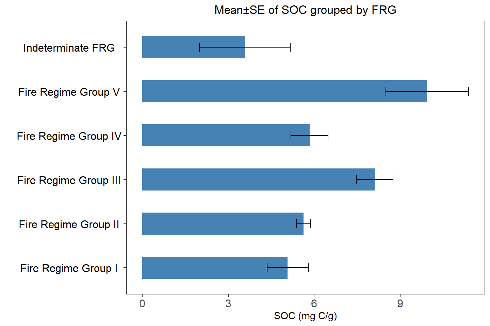
Barplot FRG
ggplot(FRG.SOC, aes(x=FRG_DES, y=mean)) +
geom_bar(stat="identity", position=position_dodge(),width=0.5, fill="steelblue") +
geom_errorbar(aes(ymin=mean-se, ymax=mean+se), width=.2,
position=position_dodge(.9))+
labs(title="")+
theme_bw() +
coord_flip()+
theme(axis.line = element_line(colour = "black"),
# plot.title = element_text(hjust = 0.5),
panel.grid.major = element_blank(),
panel.grid.minor = element_blank(),
panel.background = element_blank(),
axis.text.y=element_text(size=12,vjust = 0.5, hjust=0.5, colour='black'),
axis.text.x = element_text(size=12))+
labs(y="SOC (mg C/g)", x = "")+
ggtitle("Mean±SE of SOC grouped by FRG")+
theme(plot.title = element_text(hjust = 0.5))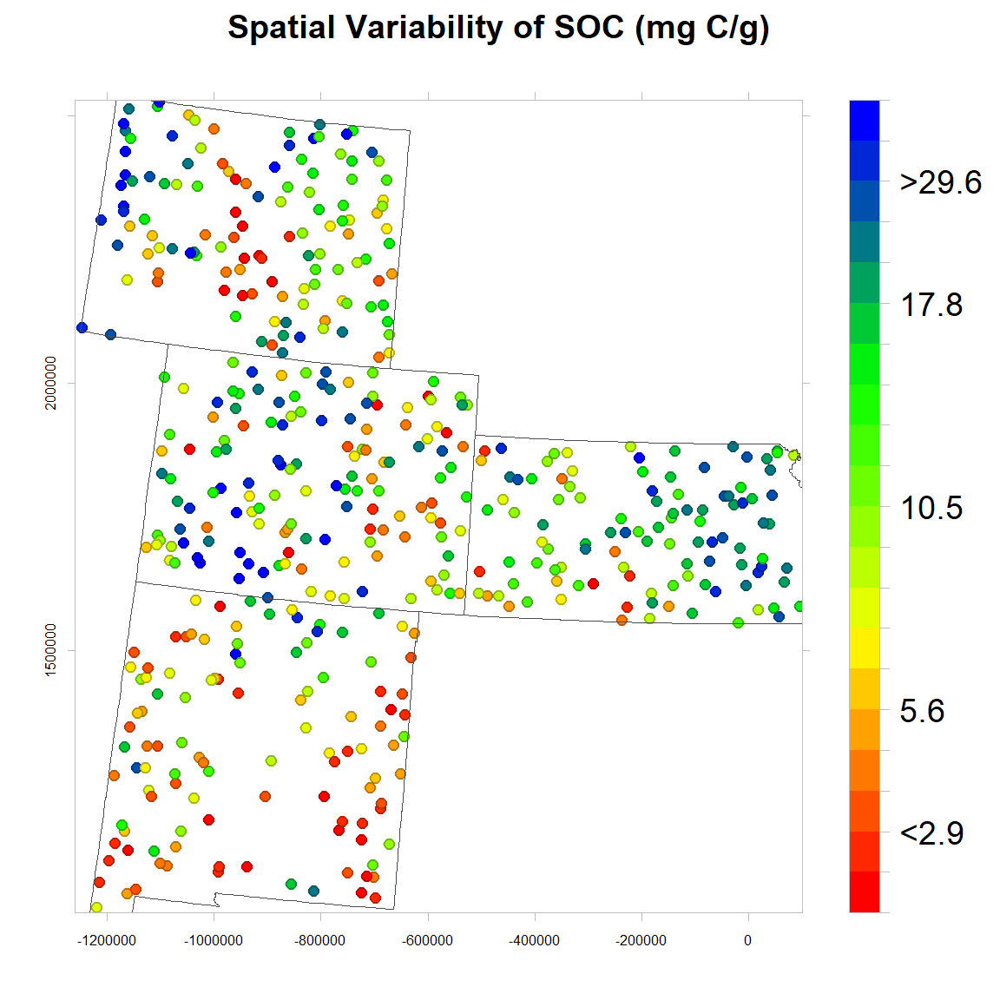
Spatial Variability of SOC
We will use levelplot() function to create a map in quantile scale to explore spatial pattern of SOC.
# Define class intervel (20 quantile)
at = classIntervals(mf$SOC, n = 20, style = "quantile")$brks
round(quantile(mf$SOC, probs=seq(0,1, by=0.05)),1) # use for custom color key## 0% 5% 10% 15% 20% 25% 30% 35% 40% 45% 50% 55% 60% 65% 70%
## 0.0 0.8 1.2 1.7 2.3 2.8 3.1 3.5 4.0 4.5 4.9 5.4 6.1 6.5 7.4
## 75% 80% 85% 90% 95% 100%
## 8.6 10.0 11.2 13.4 16.5 30.5# Create a color palette
rgb.palette.col <- colorRampPalette(c("red","yellow", "green", "blue"),space = "rgb")
# Crate a Figure
soc<-levelplot(SOC~x+y, mf,cex=0.8,
aspect = "iso",
main= "Spatial Variability of SOC (mg C/g)",
xlab="", ylab="",
scales=list(y=list(draw=T,cex=0.5,rot=90, tck= 0.5),x=list(draw=T, cex=0.5,tck= 0.6)),
par.settings=list(axis.line=list(col="grey",lwd=0.5)),
col.regions=rgb.palette.col (20),at=at,
colorkey=list(space="right",width=1.5,at=1:21,labels=list(cex=1.2,at=1:21,
labels=c("","","<2.9", "","","5.6","","","","","10.5","","","","","17.8", "","",">29.6","",""))),
panel = function(...) {
panel.levelplot.points(...)
sp.polygons(state,lty=1,lwd=0.5,col="grey30")
},)
soc
# Save as
windows(width=6, height=6)
tiff(file=paste0(dataFolder,"FIGURE_SOC_OBSERVED_Col.tif"),
width=6, height=6,units = "in", pointsize = 12, res=600,
restoreConsole = T,bg="transparent")
print(soc)
dev.off()County Mean
# Load County Shape file
county<-shapefile(paste0(dataFolder,"GP_COUNTY.shp"))
# County mean
FIPS.SOC<-ddply(mf,~FIPS, summarise, mean=mean(SOC))
# Join to County shape files
county.soc<-merge(county,FIPS.SOC, by="FIPS")spplot(county.soc,"mean",
main="County Mean of SOC (mg C/g)")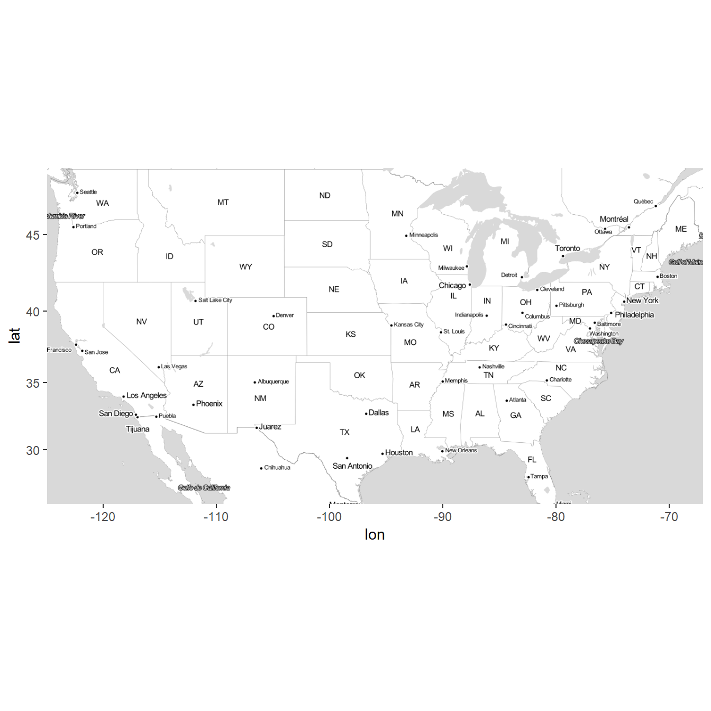
Plot Data on Web Map
We use ggmap package to visualize data on Map
us <- c(left = -125, bottom = 25.75, right = -67, top = 49)
map <- get_stamenmap(us, zoom = 5, maptype = "toner-lite")
ggmap(map)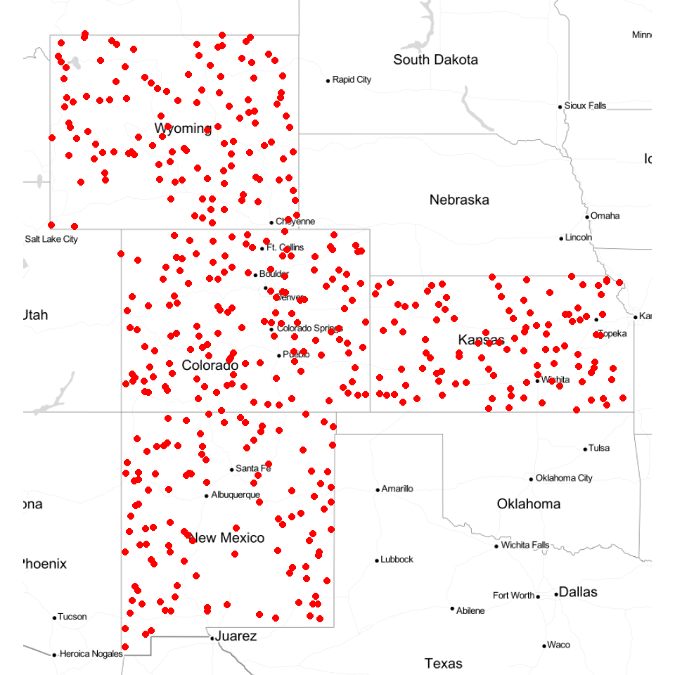
qmplot(Longitude, Latitude, data = df, maptype = "toner-lite", color = I("red"))
Data split
The data set (n = 471) will be randomly split into 368 (80%) calibration data, which will be used for model development and 101 (20%) validation data which will used for evaluating the prediction models. For data splitting, we will use Stratified Random Sampling algorithms.
mf$NLCD<-as.factor(mf$NLCD)
mf$FRG<-as.factor(mf$FRG)tr_prop = 0.80
# training data
train = ddply(mf, .(NLCD,FRG),function(., seed) { set.seed(seed); .[sample(1:nrow(.), trunc(nrow(.) * tr_prop)), ] }, seed = 101)
# Validation data (20% of data)
test = ddply(mf, .(NLCD,FRG),
function(., seed) { set.seed(seed); .[-sample(1:nrow(.), trunc(nrow(.) * tr_prop)), ] }, seed = 101)write.csv(train, paste0(dataFolder,"train_data.csv"), row.names=F)
write.csv(test, paste0(dataFolder,"test_data.csv"), row.names=F)Map Training and test data set
bound<-shapefile(paste0(dataFolder,"GP_STATE.shp"))
at = classIntervals(mf$SOC, n = 20, style = "quantile")$brks
round(quantile(mf$SOC, probs=seq(0,1, by=0.05)),1)## 0% 5% 10% 15% 20% 25% 30% 35% 40% 45% 50% 55% 60% 65% 70%
## 0.0 0.8 1.2 1.7 2.3 2.8 3.1 3.5 4.0 4.5 4.9 5.4 6.1 6.5 7.4
## 75% 80% 85% 90% 95% 100%
## 8.6 10.0 11.2 13.4 16.5 30.5coordinates(test)<-~x+y
rgb.palette.col <- colorRampPalette(c("red","yellow", "green", "blue"),space = "rgb")levelplot(SOC~x+y, mf,cex=0.6,
aspect = "iso",main= "Training (clossed) & Test (open) Data",
xlab="", ylab="",
scales=list(y=list(draw=T,cex=0.5,rot=90, tck= 0.5),x=list(draw=T, cex=0.5,tck= 0.6)),
par.settings=list(axis.line=list(col="grey",lwd=0.5)),
col.regions=rgb.palette.col (20),at=at,
colorkey=list(space="right",width=1.2,at=1:21,labels=list(cex=1.2,at=1:21,
labels=c("","","< 1.2","" ,"","2.8","","","","","4.9","","","","","8.6","","",">13.4","",""))),
panel = function(...) {
panel.levelplot.points(...)
sp.points(test, col="black", cex=1.2,pch=21)
sp.polygons(bound,lty=1,lwd=0.5,col="grey30")
},) 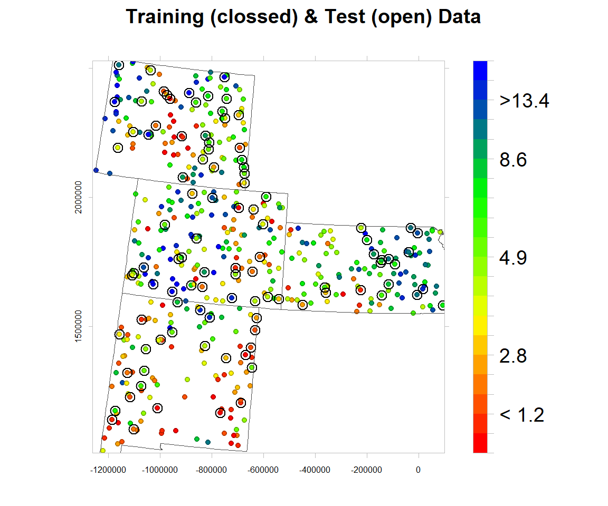